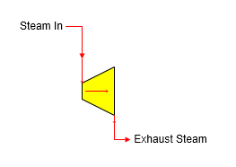

Turbine A turbine station is used to simulate the power produced by the loss of pressure and temperature that occurs in a steam flow as it passes through a turbine.

General Features The drop in steam pressure and temperature is representative of the energy removed from the steam and the mechanical power produced from the steam passing through the turbine. Water/vapor phase changes can occur. The steam input flow will be required if a power output is specified, or if the output flow is required by another station. Pressure feedback can be passed through the station if pressure drop is specified.